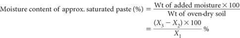

Many soil saturation pastes are based on visual estimations of the appropriate moisture content (Richards 1954). Saturation can normally be assumed when the soil paste glistens as it reflects light, flows slightly when tipped, and slides freely and cleanly from a spatula, except when soils contain much clay.
This method is used to determine the percentage moisture (oven-dry basis) at the point of visual saturation. It is applicable to air-dry soils ground to <2 mm, when a 10 mm tension table and moisture rings are unavailable. Once prepared, the saturation extract is removed for subsequent analyses.
Initially determine the air-dry moisture content of each sample by Method 2A1. Next weigh the equivalent of X1 g oven-dry soil (<2 mm) into a container of known weight; weight of container + soil = X2 g. The preferred minimum weight of oven-dry soil equivalent is 100 g. A sample weight of 250 g, however, is convenient to handle and provides sufficient saturation extract for most purposes.
Prepare the saturated paste by slowly adding deionised water to the soil while stirring with a spatula; use a separate spatula for each soil to avoid cross-contamination and soil loss. Tap the container on the bench from time to time to consolidate the soil/water mixture. Note that there are difficulties in preparing ideal saturation pastes with some soils. For example, to minimise puddling in soils of high clay content, water should be added slowly with a minimum of stirring, especially in the early stages. Dry, peaty soils, especially if coarse-textured or woody, usually require overnight wetting-up, followed by a second wetting-up and remixing (SSIR 1984).
Allow to stand overnight. Saturation can be assumed if free water does not collect on the surface and the paste does not stiffen markedly or lose its glistening appearance on standing. If either of these conditions occurs, add more pre-weighed dry soil or water, respectively, and remix until an appropriate saturation paste is obtained. Record the weight of container + soil + added moisture = X3 g. Make necessary adjustments to X1, X2 and X3 for those samples that required further additions of air-dry soil to obtain appropriate saturated pastes.

Report result as moisture content of approximate saturated paste (%).